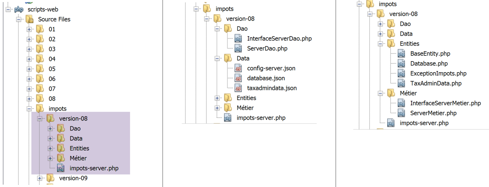
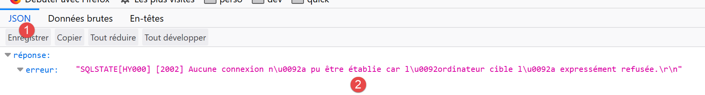
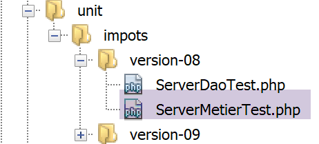
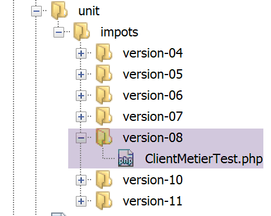

18. 练习题 – 第 8 版
我们将重新审视示例应用程序——第 5 版（链接段落），并将其改造成客户端/服务器应用程序。
18.1. 简介
第 5 版的架构如下：

- 名为 [dao]（数据访问对象）的层负责处理与 MySQL 数据库及本地文件系统的交互；
- 名为 [business] 的层负责执行税费计算；
- 主脚本充当协调者：它实例化 [DAO] 和 [业务逻辑] 层，然后与 [业务逻辑] 层进行通信以执行必要的任务；
我们将把该架构迁移至以下客户端/服务器架构：

- 在[2]中，我们将复用第5版中的[DAO]层，并移除用于访问本地文件系统的方法。这些方法将迁移至客户端的[DAO]层[6, 7]；
- 在[3]中，[业务]层将与第5版保持一致，但去除了其中的[executeBatchImpôts, saveResults]方法，这些方法将迁移至客户端的[DAO]层[7]；
- 在[4]中，必须编写服务器脚本：它需要：
- 创建 [业务] 和 [DAO] 层 [3, 2]；
- 与客户端脚本进行通信 [5, 7]；
- 在[7]中，必须编写客户端的[DAO]层：
- 它将作为服务器脚本的 HTTP 客户端 [4, 5]；
- 它将复用第 5 版 [DAO] 层中用于访问本地文件系统的方法；
- 在 [8] 中，客户端的 [业务] 层将遵循第 5 版中的 [BusinessInterface] 接口。但其实现方式将有所不同。 在第 5 版中，[business] 层负责执行税费计算。在此，该计算由服务器的 [business] 层执行。因此，[business] 层将调用 [DAO] 层 [7] 与服务器通信，并请求其计算税费；
- 在 [9] 中，控制台脚本需要实例化客户端的 [DAO、业务] 层并启动其执行；
18.2. 服务器
我们目前专注于应用程序的服务器端。

该架构将通过以下脚本实现：

18.2.1. 层间交换的实体

层间交换的实体是链接部分中所述的第5版中的实体。
18.2.2. [dao] 层

[dao]层实现了以下[InterfaceServerDao]接口：
<?php
// namespace
namespace Application;
interface InterfaceServerDao {
// reading tax administration data
public function getTaxAdminData(): TaxAdminData;
}
- 第 9 行：[getTaxAdminData] 方法从数据库中检索税务管理数据；
[InterfaceServerDao] 接口由以下 [ServerDao] 类实现：
<?php
// namespace
namespace Application;
// definition of a ImpotsWithDataInDatabase class
class ServerDao implements InterfaceServerDao {
// the TaxAdminData object containing tax bracket data
private $taxAdminData;
// the [Database] type object containing the characteristics of the BD
private $database;
// manufacturer
public function __construct(string $databaseFilename) {
// store the JSON configuration of the bd
$this->database = (new Database())->setFromJsonFile($databaseFilename);
// we prepare the attribute
$this->taxAdminData = new TaxAdminData();
try {
// open the database connection
$connexion = new \PDO($this->database->getDsn(), $this->database->getId(), $this->database->getPwd());
// we want every SGBD error to trigger an exception
$connexion->setAttribute(\PDO::ATTR_ERRMODE, \PDO::ERRMODE_EXCEPTION);
// start a transaction
$connexion->beginTransaction();
// fill in the tax bracket table
$this->getTranches($connexion);
// fill in the constants table
$this->getConstantes($connexion);
// the transaction is completed successfully
$connexion->commit();
} catch (\PDOException $ex) {
// is there a transaction in progress?
if (isset($connexion) && $connexion->inTransaction()) {
// transaction ends in failure
$connexion->rollBack();
}
// trace the exception back to the calling code
throw new ExceptionImpots($ex->getMessage());
} finally {
// close the connection
$connexion = NULL;
}
}
// reading data from the database
private function getTranches($connexion): void {
…
}
// reading the constants table
private function getConstantes($connexion): void {
…
}
// returns data for tax calculation
public function getTaxAdminData(): TaxAdminData {
return $this->taxAdminData;
}
}
该代码在链接的章节中已展示。
18.2.3. [业务]层
[业务]层实现了以下[InterfaceServerMetier]接口：
<?php
// namespace
namespace Application;
interface InterfaceServerMetier {
// calculating a taxpayer's taxes
public function calculerImpot(string $marié, int $enfants, int $salaire): array;
}
[InterfaceServerMetier] 接口由以下 [ServerMetier] 类实现：
<?php
// namespace
namespace Application;
class ServerMetier implements InterfaceServerMetier {
// dao layer
private $dao;
// tax administration data
private $taxAdminData;
//---------------------------------------------
// setter couche [dao]
public function setDao(InterfaceServerDao $dao) {
$this->dao = $dao;
return $this;
}
public function __construct(InterfaceServerDao $dao) {
// a reference is stored on the [dao] layer
$this->dao = $dao;
// recover data for tax calculation
// method [getTaxAdminData] may throw a ExceptionImpots exception
// we then let it go back to the calling code
$this->taxAdminData = $this->dao->getTaxAdminData();
}
// tAX CALCULATION
// --------------------------------------------------------------------------
public function calculerImpot(string $marié, int $enfants, int $salaire): array {
…
// result
return ["impôt" => floor($impot), "surcôte" => $surcôte, "décôte" => $décôte, "réduction" => $réduction, "taux" => $taux];
}
// --------------------------------------------------------------------------
private function calculerImpot2(string $marié, int $enfants, float $salaire): array {
…
// result
return ["impôt" => $impôt, "surcôte" => $surcôte, "taux" => $coeffR[$i]];
}
// revenuImposable=annualwage-discount
// the allowance has a minimum and a maximum
private function getRevenuImposable(float $salaire): float {
…
// result
return floor($revenuImposable);
}
// calculates any discount
private function getDecôte(string $marié, float $salaire, float $impots): float {
…
// result
return ceil($décôte);
}
// calculates any reduction
private function getRéduction(string $marié, float $salaire, int $enfants, float $impots): float {
..
// result
return ceil($réduction);
}
}
该代码已在链接部分的第 1 版中进行过讨论。其带数据库的面向对象版本已在链接部分中介绍。
18.2.4. 服务器脚本

服务器脚本实现了[web]层[4]。[impots-server]脚本通过以下JSON文件[config-server.json]进行配置：
{
"rootDirectory": "C:/myprograms/laragon-lite/www/php7/scripts-web/impots/version-08",
"databaseFilename": "Data/database.json",
"taxAdminDataFileName": "Data/taxadmindata.json",
"relativeDependencies": [
"/Entities/BaseEntity.php",
"/Entities/ExceptionImpots.php",
"/Entities/TaxAdminData.php",
"/Entities/Database.php",
"/Dao/InterfaceServerDao.php",
"/Dao/ServerDao.php",
"/Métier/InterfaceServerMetier.php",
"/Métier/ServerMetier.php"
],
"absoluteDependencies": ["C:/myprograms/laragon-lite/www/vendor/autoload.php"],
"users": [
{
"login": "admin",
"passwd": "admin"
}
]
}
- 第 1 行：文件路径的基准目录；
- 第 2 行：MySQL 数据库的 JSON 配置文件；
- 第 3 行：包含税务管理数据的 JSON 文件；
- 第 5–14 行：应用程序文件；
- 第 15 行：对第三方库的依赖，本例中为 Symfony；
- 第 16–20 行：获准使用该应用程序的用户数组；
JSON 文件 [database.json, taxadmindata.json] 来自第 5 版，具体说明请参见链接部分。
[impots-server] 脚本通过以下方式实现 [web] 层：
<?php
// strict adherence to declared types of function parameters
declare (strict_types=1);
// namespace
namespace Application;
// error handling by PHP
//ini_set("display_errors", "0");
//
// configuration file path
define("CONFIG_FILENAME", "Data/config-server.json");
// we retrieve the configuration
$config = \json_decode(file_get_contents(CONFIG_FILENAME), true);
// include the necessary script dependencies
$rootDirectory = $config["rootDirectory"];
foreach ($config["relativeDependencies"] as $dependency) {
require "$rootDirectory$dependency";
}
// absolute dependencies (third-party libraries)
foreach ($config["absoluteDependencies"] as $dependency) {
require "$dependency";
}
// definition of constants
define("DATABASE_CONFIG_FILENAME", $config["databaseFilename"]);
//
// symfony dependencies
use \Symfony\Component\HttpFoundation\Response;
use \Symfony\Component\HttpFoundation\Request;
// prepare JSON server response
$response = new Response();
$response->headers->set("content-type", "application/json");
$response->setCharset("utf-8");
// retrieve the current query
$request = Request::createFromGlobals();
// authentication
$requestUser = $request->headers->get('php-auth-user');
$requestPassword = $request->headers->get('php-auth-pw');
// does the user exist?
$users = $config["users"];
$i = 0;
$trouvé = FALSE;
while (!$trouvé && $i < count($users)) {
$trouvé = ($requestUser === $users[$i]["login"] && $users[$i]["passwd"] === $requestPassword);
$i++;
}
// set the response status code
if (!$trouvé) {
// not found - code 401
$response->setStatusCode(Response::HTTP_UNAUTHORIZED);
$response->headers->add(["WWW-Authenticate" => "Basic realm=" . utf8_decode("\"Serveur de calcul d'impôts\"")]);
// error msg
$response->setContent(\json_encode(["réponse" => ["erreur" => "Echec de l'authentification [$requestUser, $requestPassword]"]], JSON_UNESCAPED_UNICODE));
$response->send();
// end
exit;
}
// we have a valid user - we check the parameters received
$erreurs = [];
// you need three parameters GET
$method = strtolower($request->getMethod());
$erreur = $method !== "get" || $request->query->count() != 3;
// mistake?
if ($erreur) {
$erreurs[] = "Méthode GET requise avec les seuls paramètres [marié, enfants, salaire]";
}
// marital status is restored
if (!$request->query->has("marié")) {
$erreurs[] = "paramètre marié manquant";
} else {
$marié = trim(strtolower($request->query->get("marié")));
$erreur = $marié !== "oui" && $marié !== "non";
// mistake?
if ($erreur) {
$erreurs[] = "paramètre marié [$marié] invalide";
}
}
// the number of children
if (!$request->query->has("enfants")) {
$erreurs[] = "paramètre enfants manquant";
} else {
$enfants = trim($request->query->get("enfants"));
// number of children must be an integer >=0
$erreur = !preg_match("/^\d+$/", $enfants);
// mistake?
if ($erreur) {
$erreurs[] = "paramètre enfants [$enfants] invalide";
}
}
// we recover the annual salary
if (!$request->query->has("salaire")) {
$erreurs[] = "paramètre salaire manquant";
} else {
// salary must be an integer >=0
$salaire = trim($request->query->get("salaire"));
$erreur = !preg_match("/^\d+$/", $salaire);
// mistake?
if ($erreur) {
$erreurs[] = "paramètre salaire [$salaire] invalide";
}
}
// other parameters in the query?
foreach (\array_keys($request->query->all()) as $key) {
// valid parameter?
if (!\in_array($key, ["marié", "enfants", "salaire"])) {
$erreurs[] = "paramètre [$key] invalide";}
}
// mistakes?
if ($erreurs) {
// an error code 400 is sent to the customer
$response->setStatusCode(Response::HTTP_BAD_REQUEST);
$response->setContent(json_encode(["réponse" => ["erreurs" => $erreurs]], JSON_UNESCAPED_UNICODE));
$response->send();
exit;
}
// we have everything you need to work
// server architecture creation
$msgErreur = "";
try {
// creation of the [dao] layer
$dao = new ServerDao($config["databaseFilename"]);
// creation of the [business] layer
$métier = new ServerMetier($dao);
} catch (ExceptionImpots $ex) {
// we note the error
$msgErreur = utf8_encode($ex->getMessage());
}
// mistake?
if ($msgErreur) {
// an error code 500 is sent to the customer
$response->setStatusCode(Response::HTTP_INTERNAL_SERVER_ERROR);
$response->setContent(\json_encode(["réponse" => ["erreur" => $msgErreur]], JSON_UNESCAPED_UNICODE));
$response->send();
exit;
}
// tAX CALCULATION
$result = $métier->calculerImpot($marié, (int) $enfants, (int) $salaire);
// we return the answer
$response->setContent(json_encode(["réponse" => $result], JSON_UNESCAPED_UNICODE));
$response->send();
注释
- 第 16 行：我们加载配置文件；
- 第 18–26 行：我们加载所有依赖项；
- 第 29 行：[database.json] 文件的名称；
- 第 32–33 行：声明将要使用的第三方库中的类；
- 第 36–38 行：准备 JSON 响应；
- 第 40–52 行：验证发起请求的用户是否确实是授权用户；
- 第 54–63 行：若非授权用户，则发送 HTTP 401 状态码表示访问被拒绝。收到此状态码及 HTTP 头部 [WWW-Authenticate => Basic realm=] 后，大多数浏览器会显示认证窗口，提示用户登录；
- 第 59 行：服务器的 JSON 响应说明了错误原因。所有服务器响应都将是一个数组形式的 JSON 字符串 [‘response’=>’something’]；
- 第 64–117 行：我们验证请求的有效性：
- 一个包含恰好三个参数的 GET 请求；
- 一个 [married] 参数，其值必须为 ‘yes’ 或 ‘no’；
- [children] 参数，其值必须为大于等于 0 的整数；
- [salary] 参数，其值必须为大于等于 0 的整数；
- 第 65 行：每次检测到错误时，都会向数组 [$errors] 中添加一条错误信息；
- 第 120–126 行：如果发生错误，将向客户端发送 HTTP 状态码 [400 Bad Request]（第 122 行）；
- 第 123 行：服务器的 JSON 响应说明了错误的原因；
- 从第 132 行开始，所有内容均已验证通过。我们可以实例化 [DAO、业务] 层。此实例化操作会消耗资源，因此仅在确认请求有效时才应执行；
- 第 130–138 行：构建服务器架构。构建 [DAO] 层可能会抛出 [ExceptionImpots] 异常。若发生此异常，则记录错误；
- 第 135–138 行：若发生异常，则向客户端发送 HTTP 状态码 500。该代码表示服务器已崩溃；
- 第 143 行：响应中说明了错误的原因；
- 第 148 行 ：将税费计算委托给 [business] 层；
- 第 150–151 行：发送响应；
让我们用浏览器测试这个脚本。访问安全 URL [https://localhost:443/php7/scripts-web/impots/version-08/impots-server.php?marié=oui&enfants=5&salaire=100000]：

- 在 [1] 中，请求的安全 URL；
- 在 [2] 中，三个参数 [married, children, salary]；
- 在 [3] 中，Laragon 的 Apache 服务器发送了一个自签名 SSL 证书。浏览器检测到这一点并显示安全警告：它认为该服务器的网站不可信；
- 在 [4] 中，我们继续；

- 在 [6] 中，我们继续；

- 在[7]中，浏览器会显示一个窗口供用户登录；
- 在 [9,10] 中，分别输入 [admin] 和 [admin]；

- 在[13]中，服务器的JSON响应；
让我们运行一些错误测试：
我们请求 URL [https://localhost/php7/scripts-web/impots/version-08/impots-server.php?marié=x&enfants=x&salaire=x&w=x]
我们得到以下结果：

我们关闭 MySQL 数据库管理系统，并请求 URL [https://localhost/php7/scripts-web/impots/version-08/impots-server.php?marié=oui&enfants=3&salaire=60000]：

18.2.5. [Codeception] 测试
每次构建服务器的新版本时，我们将按照自 04 版以来的惯例（参见段落链接和链接），对 [业务] 和 [DAO] 层进行测试。
首先，我们将 [scripts-web] 项目与 [Codeception] 测试关联起来。具体操作方法与链接段落中针对 [scripts-console] 项目所采用的步骤相同。最终，我们将得到一个包含 [Test Files] 文件夹的 [scripts-web] 项目：

我们将为 [dao] 层和 [business] 层各创建一个测试。
18.2.5.1. 针对 [dao] 层的测试

[ServerDaoTest] 的内容如下：
<?php
// strict adherence to declared types of function parameters
declare (strict_types=1);
// namespace
namespace Application;
// definition of constants
define("ROOT", "C:/myprograms/laragon-lite/www/php7/scripts-web/impots/version-08");
// configuration file path
define("CONFIG_FILENAME", ROOT . "/Data/config-server.json");
// we retrieve the configuration
$config = \json_decode(\file_get_contents(CONFIG_FILENAME), true);
// include the necessary script dependencies
$rootDirectory = $config["rootDirectory"];
foreach ($config["relativeDependencies"] as $dependency) {
require "$rootDirectory$dependency";
}
// absolute dependencies (third-party libraries)
foreach ($config["absoluteDependencies"] as $dependency) {
require "$dependency";
}
// test -----------------------------------------------------
class ServerDaoTest extends \Codeception\Test\Unit {
// TaxAdminData
private $taxAdminData;
public function __construct() {
// parent
parent::__construct();
// we retrieve the configuration
$config = \json_decode(\file_get_contents(CONFIG_FILENAME), true);
// creation of the [dao] layer
$dao = new ServerDao(ROOT . "/" . $config["databaseFilename"]);
$this->taxAdminData = $dao->getTaxAdminData();
}
// tests
public function testTaxAdminData() {
…
}
}
评论
- 第 9–24 行：我们设置了与服务器 [impots-server.php] 相同的工作环境。这是通过第 9–12 行定义环境所依赖的两个常量来实现的；
- 第 32–40 行：我们创建待测试的 [dao] 层的实例，这与服务器脚本 [impots-server.php] 中的做法一致；
- 从这一刻起，我们处于与服务器脚本 [impots-server.php] 相同的条件下：可以开始测试；
- 第 43–45 行：[testTaxAdminData] 方法即链接章节中所述的方法；
测试结果如下：

18.2.5.2. [business] 层的测试

[ServerMetierTest] 测试将如下所示：
<?php
// strict adherence to declared types of function parameters
declare (strict_types=1);
// namespace
namespace Application;
// definition of constants
define("ROOT", "C:/myprograms/laragon-lite/www/php7/scripts-web/impots/version-08");
// configuration file path
define("CONFIG_FILENAME", ROOT . "/Data/config-server.json");
// we retrieve the configuration
$config = \json_decode(\file_get_contents(CONFIG_FILENAME), true);
// include the necessary script dependencies
$rootDirectory = $config["rootDirectory"];
foreach ($config["relativeDependencies"] as $dependency) {
require "$rootDirectory$dependency";
}
// absolute dependencies (third-party libraries)
foreach ($config["absoluteDependencies"] as $dependency) {
require "$dependency";
}
// test class
class ServerMetierTest extends \Codeception\Test\Unit {
// business layer
private $métier;
public function __construct() {
parent::__construct();
// we retrieve the configuration
$config = \json_decode(\file_get_contents(CONFIG_FILENAME), true);
// creation of the [dao] layer
$dao = new ServerDao(ROOT . "/" . $config["databaseFilename"]);
// creation of the [business] layer
$this->métier = new ServerMetier($dao);
}
// tests
public function test1() {
…
}
public function test2() {
…
}
..
public function test11() {
…
}
}
评论
- 第 9–24 行：我们设置了与 [impots-server.php] 服务器相同的工作环境。这是通过第 9–12 行定义环境所依赖的两个常量来实现的；
- 第 30–38 行：我们创建了一个待测试的 [business] 层实例，这与服务器脚本 [impots-server.php] 中的做法一致；
- 从这一刻起，我们与服务器脚本 [impots-server.php] 处于相同的环境中：我们可以开始测试；
- 第 40–53 行：方法 [test1, test2…, test11] 即链接章节中所述的方法；
测试结果如下：

18.3. 客户端
我们目前专注于应用程序的客户端部分。

该架构将通过以下脚本实现：

18.3.1. 各层之间交换的实体

上述实体均已描述完毕，且已投入使用：
18.3.2. [dao] 层

[dao] 层实现了以下 [InterfaceClientDao] 接口：
<?php
// namespace
namespace Application;
interface InterfaceClientDao {
// reading taxpayer data
public function getTaxPayersData(string $taxPayersFilename, string $errorsFilename): array;
// calculating a taxpayer's taxes
public function calculerImpot(string $marié, int $enfants, int $salaire): array;
// recording results
public function saveResults(string $resultsFilename, array $taxPayersData): void;
}
- 第 9 行：[getTaxPayersData] 函数将纳税人数据从 [$taxPayersFilename] 文件加载到内存中。如果出现任何错误，这些错误将被记录在 [$errorsFilename] 文件中；
- 第 12 行：[calculateTaxes] 函数计算纳税人的税款；
- 第 15 行：[saveResults] 函数将 [$taxPayersData] 数组中的数据（该数组包含多项税款计算的结果）保存到 [$resultsFilename] 文件中；
[InterfaceClientDao] 接口由以下 [ClientDao] 类实现：
<?php
namespace Application;
// dependencies
use \Symfony\Component\HttpClient\HttpClient;
class ClientDao implements InterfaceClientDao {
// using a Trait
use TraitDao;
// attributes
private $urlServer;
private $user;
// manufacturer
public function __construct(string $urlServer, array $user) {
$this->urlServer = $urlServer;
$this->user = $user;
}
// tAX CALCULATION
public function calculerImpot(string $marié, int $enfants, int $salaire): array {
// create a HTTP customer
$httpClient = HttpClient::create([
'auth_basic' => [$this->user["login"], $this->user["passwd"]],
"verify_peer" => false
]);
// make a request to the server
$response = $httpClient->request('GET', $this->urlServer,
["query" => [
"marié" => $marié,
"enfants" => $enfants,
"salaire" => $salaire
]]);
// the answer is retrieved
$json = $response->getContent(false);
$array = \json_decode($json, true);
$réponse = $array["réponse"];
// logs
// print "$json=json\n";
// retrieve response status
$statusCode = $response->getStatusCode();
// mistake?
if ($statusCode !== 200) {
// we have an error - we throw an exception
$réponse = ["statut HTTP" => $statusCode] + $réponse;
$message = \json_encode($réponse, JSON_UNESCAPED_UNICODE);
throw new ExceptionImpots($message);
}
// we return the answer
return $réponse;
}
}
评论
- 第 10 行：我们插入 [TraitDao]（参见相关段落），该类实现了 [getTaxPayersData] 和 [saveResults] 方法。至此，仅剩 [calculateTaxes] 方法需要实现。该方法在第 22–49 行中实现；
- 第 16–19 行：[ClientDao] 类的构造函数接受两个参数：
- 税务计算服务器的 URL [$urlServer]；
- 包含键值对“login”和“passwd”的数组 [$user]，用于定义发起请求的用户；
- 第 22 行：[calculateTaxes] 方法接收这三个参数，并将它们发送至税费计算服务器；
- 第 24–27 行：创建一个 HTTP 客户端，其中：
- 第 25 行：发送请求的用户凭据；
- 第 26 行：设置选项，防止 HTTP 客户端验证服务器发送的 SSL 证书的有效性；
- 第 29–34 行：使用服务器预期的三个参数向服务器发送请求；
- 第 36 行：从服务器获取 JSON 响应。 如果未在 [Response::getContent] 方法上设置 [false] 参数，那么当服务器的响应状态处于 [3xx-5xx] 范围（错误情况）时，一旦尝试获取响应内容 [Response::getContent] 或其 HTTP 头部 [Response::getHeaders]，[Response] 对象就会抛出异常。 在此，无论响应的 HTTP 状态如何，我们都希望能够访问其内容，哪怕只是为了将其记录到日志中（第 40 行）；
- 第 37-38 行：服务器的响应是一个 JSON 字符串，格式为数组 [‘response’=>something]。我们提取其中的 [something]；
- 第 40 行：在开发模式下记录 JSON 响应；
- 第 42 行：我们获取响应状态码；
- 第 44-49 行：如果 HTTP 状态码不是 200，则说明服务器遇到了问题。此时，我们会抛出一个 [ExceptionImpots] 异常，其消息由服务器的 JSON 响应加上 HTTP 状态码组成；
- 第 51 行：返回结果，这是一个关联数组，键为 [tax, surcharge, discount, reduction, rate]；
18.3.3. [业务]层

[业务]层 [8] 实现了以下 [BusinessClientInterface]：
<?php
// namespace
namespace Application;
interface InterfaceClientMetier {
// calculating a taxpayer's taxes
public function calculerImpot(string $marié, int $enfants, int $salaire): array;
// batch mode tax calculation
public function executeBatchImpots(string $taxPayersFileName, string $resultsFileName, string $errorsFileName): void;
}
- 第 9 行：[calculateTaxes] 函数计算税款；
- 第 12 行：[executeBatchImports] 函数为 [$taxPayersFileName] 文件中的纳税人计算税款，将结果写入 [$resultsFileName] 文件，并将遇到的任何错误写入 [$errorsFileName] 文件；
[BusinessClientInterface] 接口由以下 [BusinessClient] 类实现：
<?php
// namespace
namespace Application;
class ClientMetier implements InterfaceClientMetier {
// attribute
private $clientDao;
// manufacturer
public function __construct(InterfaceClientDao $clientDao) {
// the reference is stored on the [dao] layer
$this->clientDao = $clientDao;
}
// tAX CALCULATION
public function calculerImpot(string $marié, int $enfants, int $salaire): array {
return $this->clientDao->calculerImpot($marié, $enfants, $salaire);
}
// batch mode tax calculation
public function executeBatchImpots(string $taxPayersFileName, string $resultsFileName, string $errorsFileName): void {
// we let the exceptions coming from the [dao] layer flow upwards
// retrieve taxpayer data
$taxPayersData = $this->clientDao->getTaxPayersData($taxPayersFileName, $errorsFileName);
// results table
$results = [];
// we exploit them
foreach ($taxPayersData as $taxPayerData) {
// tax calculation
$result = $this->calculerImpot(
$taxPayerData->getMarié(),
$taxPayerData->getEnfants(),
$taxPayerData->getSalaire());
// complete [$taxPayerData]
$taxPayerData->setFromArrayOfAttributes($result);
// put the result in the results table
$results [] = $taxPayerData;
}
// recording results
$this->clientDao->saveResults($resultsFileName, $results);
}
}
评论
- 第 11–14 行：[ClientMetier] 类的构造函数接收一个指向 [dao] 层的引用作为参数；
- 第 17–19 行：税费计算委托给 [dao] 层；
- 第 20–38 行：[executeBatchImpots] 函数已在链接部分中描述；
18.3.4. 主脚本

客户端脚本 [MainImpotsClient.php] 实现了 [console] 层 [9]。它由以下 JSON 文件 [conf-client.json] 进行配置：
{
"rootDirectory": "C:/Data/st-2019/dev/php7/poly/scripts-console/impots/version-08",
"taxPayersDataFileName": "Data/taxpayersdata.json",
"resultsFileName": "Data/results.json",
"errorsFileName": "Data/errors.json",
"dependencies": [
"Entities/BaseEntity.php",
"Entities/TaxPayerData.php",
"Entities/ExceptionImpots.php",
"Utilities/Utilitaires.php",
"Dao/InterfaceClientDao.php",
"Dao/TraitDao.php",
"Dao/ClientDao.php",
"Métier/InterfaceClientMetier.php",
"Métier/ClientMetier.php"
],
"absoluteDependencies": [
"C:/myprograms/laragon-lite/www/vendor/autoload.php"
],
"user": {
"login": "admin",
"passwd": "admin"
},
"urlServer": "https://localhost:443/php7/scripts-web/impots/version-08/impots-server.php"
}
- 第 1 行：客户端的根目录；
- 第 2 行：包含纳税人数据的 JSON 文件；
- 第3行：包含结果的JSON文件；
- 第 4 行：包含错误信息的 JSON 文件；
- 第 6–19 行：客户端项目的各种依赖项；
- 第 20–23 行：用户向税费计算服务器发送请求；
- 第 24 行：税费计算服务器的安全 URL；
[MainImpotsClient.php] 脚本的代码如下：
<?php
// strict adherence to declared types of function parameters
declare (strict_types=1);
// namespace
namespace Application;
// error handling by PHP
//ini_set("display_errors", "0");
//
// configuration file path
define("CONFIG_FILENAME", "../Data/config-client.json");
// we retrieve the configuration
$config = \json_decode(file_get_contents(CONFIG_FILENAME), true);
// include the necessary script dependencies
$rootDirectory = $config["rootDirectory"];
foreach ($config["dependencies"] as $dependency) {
require "$rootDirectory/$dependency";
}
// absolute dependencies (third-party libraries)
foreach ($config["absoluteDependencies"] as $dependency) {
require "$dependency";
}
// definition of constants
define("TAXPAYERSDATA_FILENAME", "$rootDirectory/{$config["taxPayersDataFileName"]}");
define("RESULTS_FILENAME", "$rootDirectory/{$config["resultsFileName"]}");
define("ERRORS_FILENAME", "$rootDirectory/{$config["errorsFileName"]}");
//
// symfony dependencies
use Symfony\Component\HttpClient\HttpClient;
// creation of the [dao] layer
$clientDao = new ClientDao($config["urlServer"], $config["user"]);
// creation of the [business] layer
$clientMetier = new ClientMetier($clientDao);
// tax calculation in batch mode
try {
$clientMetier->executeBatchImpots(TAXPAYERSDATA_FILENAME, RESULTS_FILENAME, ERRORS_FILENAME);
} catch (\RuntimeException $ex) {
// error is displayed
print "L'erreur suivante s'est produite : " . $ex->getMessage() . "\n";
}
// end
print "Terminé\n";
exit;
注释
- 第 13 行：配置文件的路径；
- 第 16 行：处理配置文件；
- 第 18–26 行：加载依赖项；
- 第 37 行：创建 [dao] 层。我们向该层的构造函数传递了它所期望的两项信息：
- 税费计算服务器的 URL；
- 将发起请求的用户凭据；
- 第 39 行：创建 [business] 层。我们将刚刚创建的 [dao] 层的引用传递给该层的构造函数；
- 第 43 行：我们要求 [业务] 层：
- 计算文件 $config["taxPayerDataFileName"] 中所有纳税人的税款；
- 将结果写入文件 $config["resultsFileName"];
- 将错误写入文件 $config["errorsFileName"]；
- 第 43 行可能会抛出异常；
- 第 46 行：显示异常的错误信息；
运行客户端会得到与之前版本相同的结果。请检查以下文件：
- [Data/taxpayersdata.json]：用于计算税额的纳税人数据；
- [Data/results.json]：[Data/taxpayersdata.json] 文件中各纳税人的计算结果；
- [Data/errors.json]：处理 [Data/taxpayersdata.json] 文件时可能出现的错误；
让我们来看看可能出现的错误情况。首先，停止 Laragon 服务器。此时客户端控制台显示的结果如下：
Couldn't connect to server for"https://localhost/php7/scripts-web/impots/version-08/impots-server.php?mari%C3%A9=oui&enfants=2&salaire=55555".
Terminé
现在，我们只启动 Apache 服务器，而不启动 MySQL 数据库管理系统：

客户端控制台显示的结果如下：
L'erreur suivante s'est produite : {"statut HTTP":500,"erreur":"SQLSTATE[HY000] [2002] Aucune connexion n’a pu être établie car l’ordinateur cible l’a expressément refusée.\r\n"}
Terminé
现在，让我们启动 MySQL，然后在 [config-client] 中修改连接用户：
客户端控制台显示的结果如下：
L'erreur suivante s'est produite : {"statut HTTP":401,"erreur":"Echec de l'authentification [x, x]"}
Terminé
18.3.5. 测试 [Codeception]
与之前版本的做法一样，我们将为 08 版本编写 [Codeception] 测试。

18.3.5.1. 测试 [业务] 层
[ClientMetierTest.php] 测试代码如下：
<?php
// strict adherence to declared types of function parameters
declare (strict_types=1);
// namespace
namespace Application;
// definition of constants
define("ROOT", "C:/Data/st-2019/dev/php7/poly/scripts-console/impots/version-08");
// configuration file path
define("CONFIG_FILENAME", ROOT . "/Data/config-client.json");
// we retrieve the configuration
$config = \json_decode(file_get_contents(CONFIG_FILENAME), true);
// include the necessary script dependencies
$rootDirectory = $config["rootDirectory"];
foreach ($config["dependencies"] as $dependency) {
require "$rootDirectory/$dependency";
}
// absolute dependencies (third-party libraries)
foreach ($config["absoluteDependencies"] as $dependency) {
require "$dependency";
}
//
// test class
class ClientMetierTest extends \Codeception\Test\Unit {
// business layer
private $métier;
public function __construct() {
parent::__construct();
// we retrieve the configuration
$config = \json_decode(\file_get_contents(CONFIG_FILENAME), true);
// creation of the [dao] layer
$clientDao = new ClientDao($config["urlServer"], $config["user"]);
// creation of the [business] layer
$this->métier = new ClientMetier($clientDao);
}
// tests
public function test1() {
…
}
-------------
public function test11() {
…
}
}
注释
- 第10–26行：测试环境的定义。我们使用与链接部分中描述的主脚本[MainImpotsClient]相同的环境；
- 第33–41行：构建[dao]和[business]层；
- 第 40 行：属性 [$this→business] 引用 [business] 层；
- 第 44–51 行：方法 [test1, test2…, test11] 即链接章节中所述的方法；
测试结果如下：